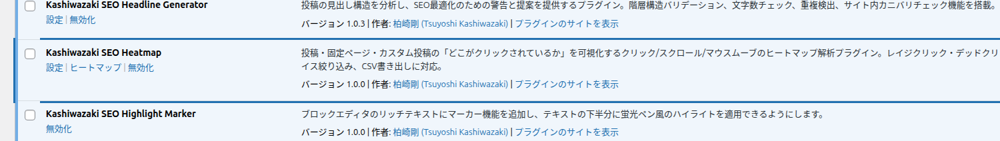
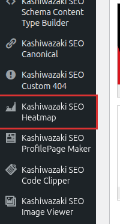
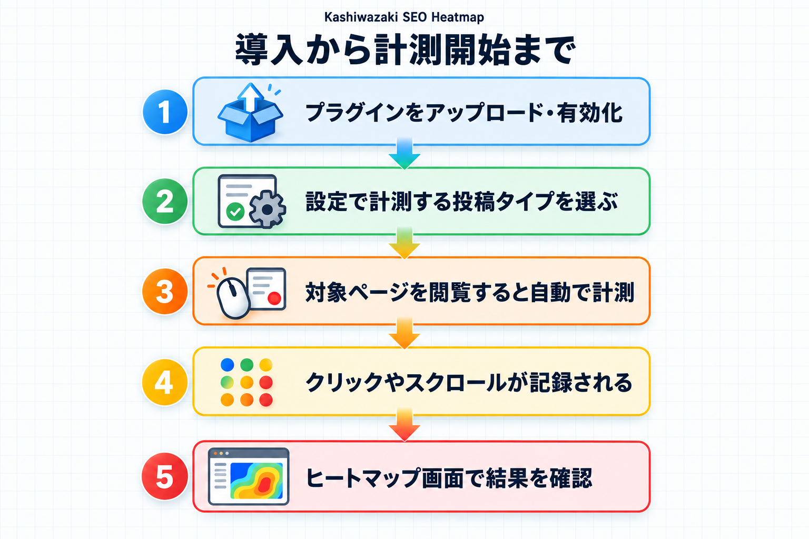
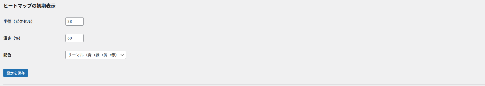

インストール・初期設定
このページでは、プラグインを設置してから、はじめてヒートマップにデータが表示されるまでの流れを説明します。
インストール手順
WordPress の管理画面から、次の手順でインストールします。
管理画面からインストールする
- 管理画面の左メニューで「プラグイン」→「新規プラグインを追加」を開きます。
- 右上の「プラグインのアップロード」ボタンを押します。
- 配布されている zip ファイルを選んで「今すぐインストール」を押します。
- インストールが終わったら「プラグインを有効化」を押します。
FTP などで設置する場合
- プラグインのフォルダーを、サーバーのプラグイン設置場所にアップロードします。
- 管理画面の「プラグイン」→「インストール済みプラグイン」を開きます。
- 一覧に「Kashiwazaki SEO Heatmap」が表示されるので、「有効化」を押します。
有効化すると、データを保存するための準備が自動で行われます。特別な操作は必要ありません。

プラグインの一覧で「有効化」のリンクのほかに「設定」のリンクが表示されます。そこからも設定画面を開けます。
管理メニューの場所
有効化すると、管理画面の左メニューに「Kashiwazaki SEO Heatmap」が追加されます。メニューの中には次の 3 つの画面があります。
| メニュー項目 | できること |
|---|---|
| ヒートマップ | 選んだページのどこがクリックされているかを表示します。 |
| ダッシュボード | サイト全体の閲覧数・クリック数などの集計を表示します。 |
| 設定 | 計測する対象や除外の条件、データの保持などを設定します。 |


計測を始めるまでの初期設定
プラグインを有効化しただけでは計測は始まりません。計測する対象の投稿タイプを選ぶ必要があります。最初にこの設定を行ってください。
手順
- 左メニューの「Kashiwazaki SEO Heatmap」→「設定」を開きます。
- 「計測する対象」の「計測する投稿タイプ」で、計測したい投稿タイプにチェックを入れます。はじめは「投稿」と「固定ページ」にチェックが入っています。投稿タイプが多いときは、「一括チェック」「一括解除」でまとめて選べます。
- 必要に応じて「計測する項目」を選びます。はじめはクリック・スクロール到達率・レイジクリック・デッドクリック・外部リンクのクリックが記録される設定です。
- 「設定を保存」を押します。

どの投稿タイプを計測すべきか迷ったら、まずは「投稿」と「固定ページ」だけにしておくのがおすすめです。あとから自由に追加・変更できます。
計測する投稿タイプにチェックを入れていないと、ページを閲覧してもデータは記録されません。ダッシュボード画面にも「計測対象の投稿タイプがまだ選ばれていません」という警告が表示されます。
計測が始まるタイミング
設定を保存したあと、対象のページを実際にブラウザで閲覧すると計測が始まります。
- ページを閉じるまで（または一定の間隔ごとに）、クリックやスクロールなどの操作がまとめて送信されます。
- 送信されたデータは集計され、ヒートマップやダッシュボードに反映されます。反映までに少し時間がかかることがあります。
- 自分でページを確認するときは、「ログイン中のユーザーを計測から除外する」設定がはじめから有効になっているため、管理者の操作は計測に混ざりません。
データをすぐに確認したい場合は、一般のブラウザ（ログインしていない状態）で対象ページを開き、いくつかクリックやスクロールをしてみてください。数秒後にヒートマップ画面へ表示されます。